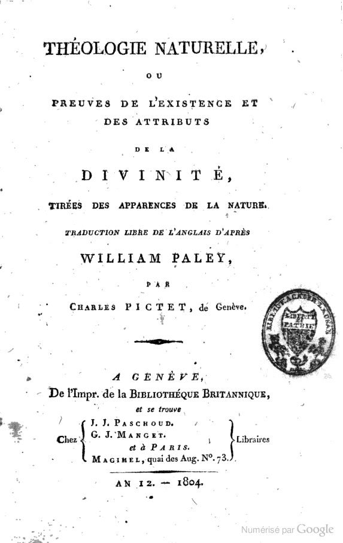
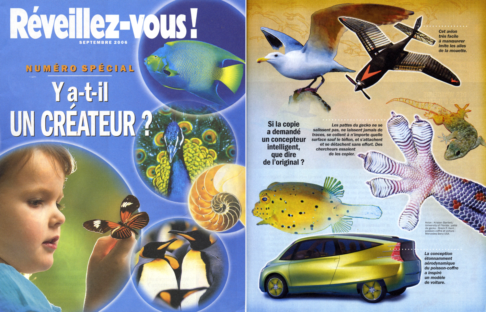
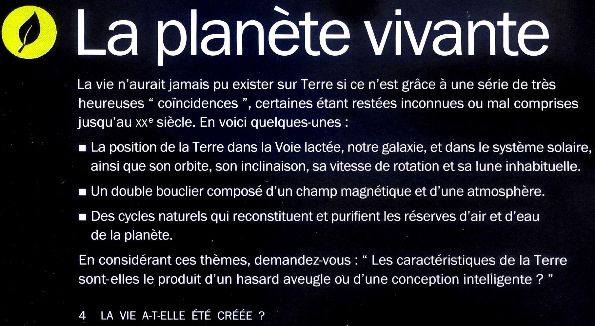
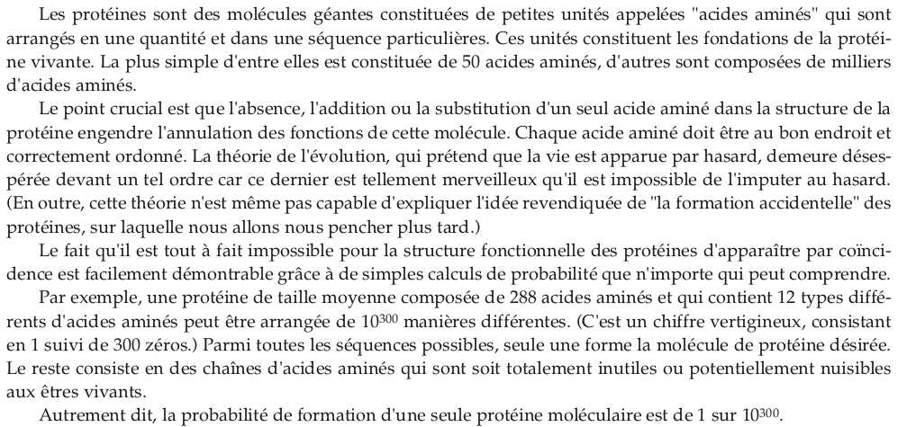

Il est courant de s’émerveiller devant la précision des mécanismes biologiques. À toutes les échelles. À l’échelle de l’organe par exemple, la main est fascinante de précision et de sensibilité. À l’échelle cellulaire, les transports de molécules par des vésicules agissant comme des wagons, glissant sur les microtubules comme sur des rails, et déversant leur contenu dans des compartiments spécifiques comme des gares, sont étonnants de complexité et de cohérence.
Remarquons toutefois que le fonctionnement biologique des organes et des cellules est loin d’être parfait : la nature n’est pas si « bien faite » ! L’objet de cet article n’étant pas là, je conseillerai au lecteur soucieux d’en savoir plus, d’écouter les propos de Guillaume Lecointre sur le sujet, dans un podcast du Muséum national d’Histoire naturelle. Pour les plus aguerris sur le sujet, un ouvrage remarquable montre des exemples d’inadaptations, en critique au Darwinisme à tout-va, il s’agit de La survie des médiocres, par Daniel S. Milo.
Face au constat apparent d’une certaine perfection, une personne non initiée aux méthodes scientifiques peut être tentée d’y voir l’acte d’un Créateur, puissance divine jouant à l’ingénieur sur les êtres vivants qu’il aurait créés. C’est le courant de pensée Créationniste.
Cette manière d’interpréter les choses de la nature est au cœur de la doctrine de la Théologie naturelle, dont William Paley est un célèbre représentant du 19ème siècle. L’extrait suivant est tiré de son ouvrage « théologie naturelle – preuves de l’existence et des attributs de la divinité, tirées des apparences de la nature » :

“ si je me retrouve sur une plage déserte et que je trouve une montre, j’observe ses rouages, ses mécanismes, sa complexité. Alors je ne peux admettre qu’elle soit le fruit du hasard, ce qui serait trop improbable. Elle ne peut qu’être le résultat d’un travail intentionné d’un artisan, d’une finalité. »
William Paley – 1804
Cette affirmation fait appel à la croyance. L’auteur se sent dépourvu devant une telle beauté d’ingénieurie, et n’imagine pas autre chose qu’une puissance divine pour en être à l’origine.
L’invocation d’un Créateur met de côté la curiosité scientifique, qui viserait à essayer de comprendre par quels mécanismes un tel organe a pu apparaître. Une solution de facilité, en quelque sorte. Si j’ose dire.
Le courant Créationniste est encore très répandu actuellement. Ci-dessous, des exemples de productions issues de ce courant de pensée :
{kind=link}

Extraits d’une revue aux thèses Créationnistes
{kind=link}

{kind=link}

Extrait d’un ouvrage envoyé à tous les établissements scolaires français en 2006…un bel exemple de prosélytisme procréationniste !
La liberté de croire ou de ne pas croire, est un droit fondamental, de surcroît dans un pays laïque. Chacun est libre d’interpréter son environnement comme il l’entend. Et cela n’est pas non plus l’objet de cet article.
Le problème des thèses Créationnistes est la confusion qu’elles génèrent, à dessein ou non, avec les sciences. Dans les documents précédents, l’objectif est clairement de substituer une croyance à la science.
Comment distinguer ce qui relève de la science, de ce qui relève de la croyance ? Comment reconnaître un argument scientifique ?
La Science : une étude rationnelle du monde réel
Un scientifique cherche à construire des connaissances objectives, sur le monde réel qui l’entoure.
Pour cela, sa démarche doit s’accorder avec plusieurs grands principes :
- le matérialisme : l’objet de l’étude scientifique doit exister. On ne peut pas étudier un phénomène non perceptible.
- le scepticisme : le scientifique ne doit pas avoir d’a priori sur ce qu’il teste, il doit rester neutre, au risque d’influencer le résultat (même involontairement). Pour creuser la question, on pourra se reporter à l’excellent ouvrage de Stephen Jay Gould : la Mal-Mesure de l’homme. L’auteur y explique notamment comment le scientifique Américain Samuel George Morton mesura le volume crânien de diverses populations humaines au 19ème siècle, et obtint des résultats erronés lui permettant d’abonder dans le sens d’un eugénisme caucasien, en étant malgré tout de bonne foi.
- la reproductibilité : ce qui est étudié par un scientifique, doit pouvoir être refait par d’autres scientifiques dans les mêmes conditions. Cela implique de communiquer clairement les modalités de l’expérience réalisée (ou du raisonnement suivi). Ce principe permet une vérification des données obtenues. C’est ce qu’on appelle la vérification par les pairs.
- la rationalité : la démarche utilisée doit être logique et parcimonieuse (principe d’économie d’hypothèses). Elle devra éviter tout finalisme (on pourra se reporter à l’article « pour et pourquoi, deux mots interdits en biologie » qui traite de cette question). Les méthodes de raisonnement employées peuvent être diverses. Nous pouvons citer comme exemple la méthode hypothético-déductive : si un phénomène se déroule comme je le pense, alors on devrait pouvoir observer cette conséquence. Vérifions-le par l’observation. Cette méthode de raisonnement est utilisée dans un cadre bien plus large que les sciences : quand un appareil électrique ne fonctionne pas, on se dit que cela peut être parce qu’il n’est pas branché. C’est une hypothèse, vérifiable en regardant si la prise est branchée.
Les hypothèses doivent être plausibles et parcimonieuses : on ne va pas imaginer qu’un rat serait entré dans la pièce pendant la nuit, et se serait mis à ronger le fil, jusqu’à le sectionner.
Faits, Théories et modèles scientifiques : quelle valeur ?
Le fait : une manifestation du monde réel
Le monde qui nous entoure est observable, de différentes manières :
- observations directes : la forme d’une feuille, l’anatomie d’un animal après dissection.
- observations indirectes : la pulpe de pomme de Terre se colore en présence d’eau iodée. Comme l’eau iodée se colore en présence d’amidon, j’en déduis qu’il y a de l’amidon dans les cellules de pomme de Terre.
Ces observations constituent des faits. C’est un ensemble de constats sur la réalité matérielle de notre monde.
Ces faits sont infiniment nombreux, pas toujours cohérents en apparence. Pour leur donner du sens, on élabore des théories.
La théorie scientifique : une explication rationnelle des faits
Une théorie scientifique est un ensemble d’hypothèses qui permettent de relier des faits en les rendant cohérents les uns avec les autres. C’est comme une tentative d’assemblage de pièces d’un puzzle incomplet. Une théorie rend intelligible un ensemble apparemment décousu d’observations. C’est donc une histoire, qui cherche à donner du sens aux observations.
Une théorie scientifique n’est pas immuable : elle est susceptible d’évoluer en fonction des nouvelles découvertes, de l’observation de nouveaux faits. Ce n’est donc pas une vérité absolue définitive.
Le modèle : une représentation basée sur une théorie
Le modèle aide à comprendre une théorie, et à faire apparaître des conséquences vérifiables. C’est une représentation qui peut prendre diverses formes : numérique, analogique, schématique ou mathématique. Comme la théorie, le modèle n’est pas immuable : il est affiné au fur et à mesure de la découverte de nouveaux faits. Les allers-retours modèle-faits sont incessants, ce qui permet de le questionner.
Pour résumer :
La chose de la science est l’étude de la matière. L’Homme construit des théories rationnelles expliquant des faits tirés de ses observations. Ces théories sont testables, vérifiables, reproductibles. Elles cherchent à expliquer les mécanismes de la nature, souvent représentés par des modèles.
La chose de la croyance est la spiritualité. Elle cherche à donner du sens à la vie.
Sciences et Croyances sont deux approches du monde, dont la démarche est différente. Les sciences cherchent à répondre à « comment », les croyances à « pourquoi ».
Pour en savoir plus sur…
- l’importance de la neutralité des scientifiques : on pourra lire l’excellent livre de l’évolutionniste Stephen Jay-Gould : la Mal-Mesure de l’homme.
- la laïcité dans les sciences : écouter le podcast de Guillaume Lecointre sur le sujet.